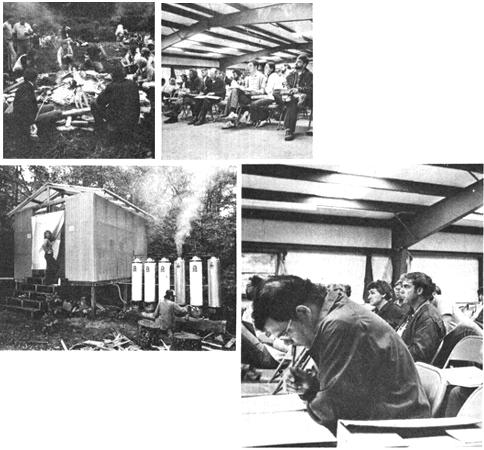

If you missed out on Mother Earth Week One, here's a glimpse of the goin's-on that filled those six days.
The days (and nights) from July 9 through 14 were, as you probably know, really exciting for all of us here at THE Mother Earth News(restricted) ... because-during that time-some 1,500 MOTHER readers flocked to this magazine's 600-plus-acre research property to attend our first-ever series of seminars.
And despite the fact that the event took place during a 10-day period that dumped half of our area's average July rainfall on the seminar property (and on our 300 seminar campers ... who responded, "So what's a little weather!"), putting a pretty serious crimp in our construction crew's endeavors, Mother Earth Week Number One was all we could have hoped for.
Of course, those seminar attendees weren't the only folks to learn a lot, as the days of discussions and evenings of campfires, down-home music, and so forth rolled on. Our staff and seminar instructors carefully made note of every suggestion for improvement that the "students" came up with and-before the second day of the week was over-were already incorporating those tips into their classes.
As you can imagine, at that rate the August seminars (and the September week, which you can still sign up for . . . using the coupon on page 50) should be downright incredible!
MOTHER's staff members, however (who spent as much time out at the seminar site as the approaching deadline for this issue would allow), felt that the most exciting part of the whole week was the opportunity to meet with-and get ideas from-so many of you . . . the readers of this publication. As the pictures that accompany this article demonstrate more clearly than words ever could, you MOTHER-type people are one fine bunch of folks!
|
 RIGHT: A lot of future ""fuel fixers"" got the practical know?how they needed at MOTHER's one-day farmer's alcohol session. TOP RIGHT: The dedicated students at the three-day earth-sheltered homes seminar stayed in class until 8:00 every night! ABOVE: A set of those amazing Megamex wood-burning water heaters (featured in MOTHER NO. 57, page 147) kept our hardworking pupils supplied with soothing hot showers. TOP LEFT: MOTHER's folks mixed some pleasure with their ""business"" by listening to an authentic mountain story teller . . . watching an engaging puppet show . . . clapping along with some downhome music . . . and enjoying cookouts at an evening bonfire. |
|
|